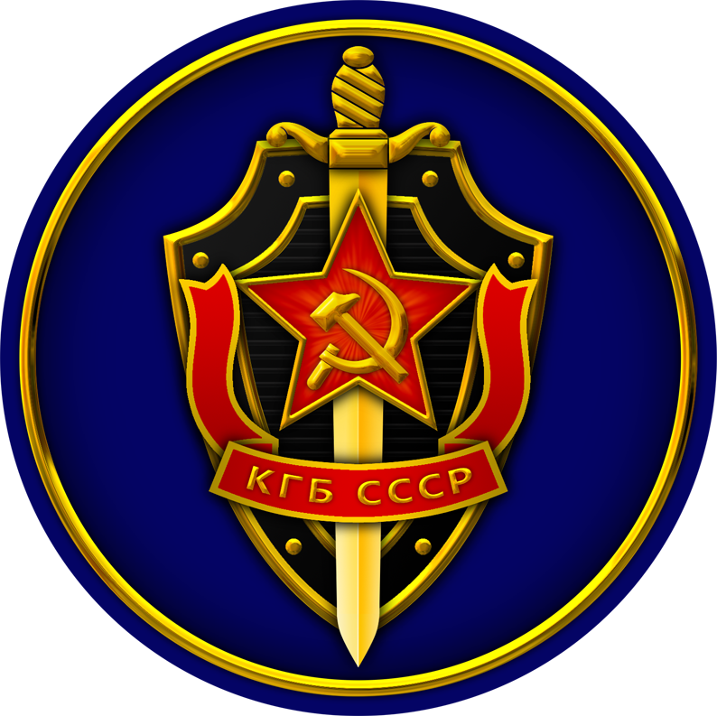
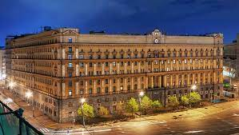
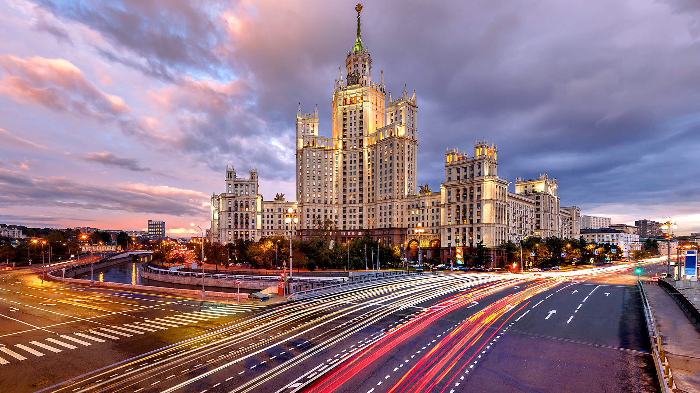

What is the KGB?
The KGB, or Komitet Gosudarstvennoy Bezopasnosti, was the main security agency for the Soviet Union from 1954 to 1991. It was responsible for intelligence gathering, counterintelligence, and internal security.

The Lubyanka Building
The KGB was headquartered in the Lubyanka Building in Moscow, which became a symbol of Soviet repression and secret police activities. Today, the building houses the headquarters of the Federal Security Service (FSB), the successor agency to the KGB.

The Seven Sisters
The KGB was also known for occupying several of the Seven Sisters buildings, a group of seven skyscrapers built in Moscow in the 1950s. These buildings were designed to showcase Soviet power and architecture.